Swingbys, part 2: trajectories to Jupiter
ΔVEGA, VEGA and VEEGA. Three ways to reach Jupiter, built for real, following how each is put together. Part 1 ended on a wall: “an Earth swingby needs V∞ of 8.79 km/s or more to throw you out”. This is about getting over it.
The baseline: going straight to Jupiter
First, something to compare against: a trajectory straight from Earth to Jupiter, with no swingby. We find the launch window with a porkchop plot.
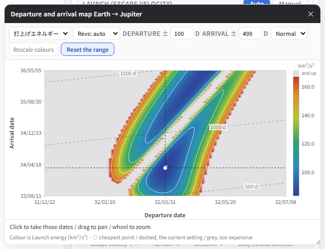
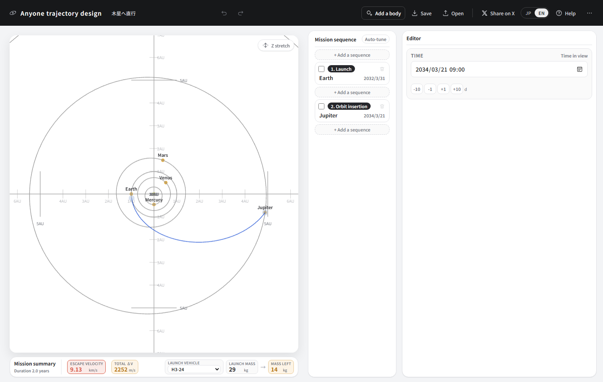
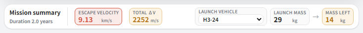
Two years is quick, but 14 kg will not carry instruments, let alone the structure of a spacecraft. A C3 of 83.32 is what does it: on the capability curves we are at the far right-hand end. Everything that follows is about how far that C3 can be brought down.
ΔVEGA: a small burn at aphelion to grow V∞
As part 1 showed, for an Earth swingby to throw you out to Jupiter, the V∞ with which you come back to Earth must be 8.79 km/s or more. Launch straightforwardly and come back to Earth and it only reaches about 5 km/s. Making up that difference with a small burn out in deep space is ΔVEGA (Delta-V Earth Gravity Assist).
Come back in exactly two years and nothing happens
Start with the case that does not work: an orbit that leaves Earth and returns to Earth two years later (a two-year resonant orbit). A launch whose period is exactly two years — 730.5 days — has escape velocity 5.03 km/s (C3 25.3). Its semi-major axis is 1.587 AU and its aphelion 2.19 AU.
Fly that and, 730.5 days later, you return to a point 33,700 km from where Earth is (well inside Earth's gravitational reach). But your speed there is 35.16 km/s, Earth's orbital speed is 30.13 km/s, and the directions match too. So V∞ is 5.03 km/s — exactly what it was at launch. A clean return, and nothing gained.
Open an angle and V∞ grows
So launch just a little harder: escape velocity 5.22 km/s (C3 27.21). A mere 0.19 km/s more, but the period becomes 757 days — 27 days longer than two years — and the aphelion stretches to 2.26 AU. Left alone you would return to a place Earth is not, so burn just 588 m/s at aphelion to line the timing up with Earth.
That burn points backwards(176.6° from the direction of travel; the speed falls from 15.59 to 15.00 km/s). Braking at aphelion lowers the perihelion, so the orbit goes from perihelion 0.988 AU and period 757 days to perihelion 0.886 AU and period 722 days. The aphelion stays at 2.26 AU. The spacecraft dips inside Earth's orbit and catches Earth on the way back out.
Because of that, on the way back you cross Earth's orbit at an angle. An angle opens up between the velocity directions.
The spacecraft's speed actually falls slightly, 35.16 → 34.75 km/s. Yet with an angle of just 14.1°, V∞ goes from 5.03 to 9.36 km/s, past the 8.79 km/s needed to be thrown out to Jupiter. A 588 m/s burn bought 4.33 km/s of V∞, a lever of 7.4.
Why burn at aphelion
The next graph measures where the burn is cheapest for the same “V∞ on return”. The launch is as above; only the place of the burn changes.
Aphelion is where the spacecraft moves slowest (15.6 km/s at 2.25 AU, against 25.0 km/s at 1.52 AU). The slower something moves, the more the same burn turns it. Turn the velocity and the shape of the orbit changes, moving the time and place of return a great deal. That is what “burn at aphelion” amounts to.
How to build it
The trick is to build not backwards from the arrival at Jupiter, but forwards from the date of the Earth swingby. That date comes from a porkchop plot.
- Take the porkchop plot for Earth → Jupiter two years after the year you want to launch, and pick a cheap date (above, 2032/3/31).
- With those two sequences (launch and Jupiter) in place, press “+ Add a sequence” at the very top of the list. A new launch goes in at the front, and the old launch becomes an empty sequence. Make it a swingby at Earth.
- Move the new launch's date two years earlier.
- Set the launch to manual mode. Two years on, Earth is back where you launched from, so departure and arrival are the same point and Lambert's problem will not solve. Auto mode cannot build this.
- Put the burn sequence that came with it a little over a year later , around aphelion.
- Enter 5.2 km/s for the launch's escape velocity, and 0 for azimuth and elevation.
- Auto-tune.
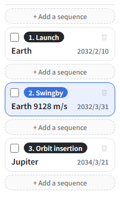
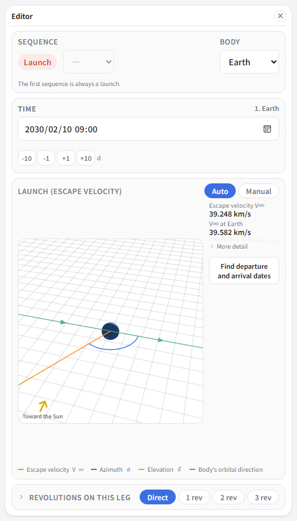
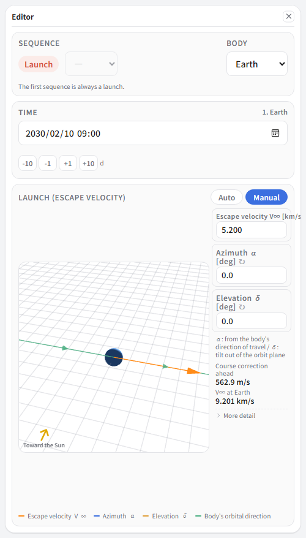
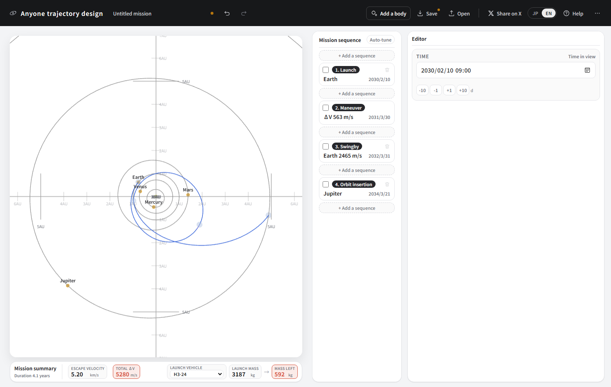
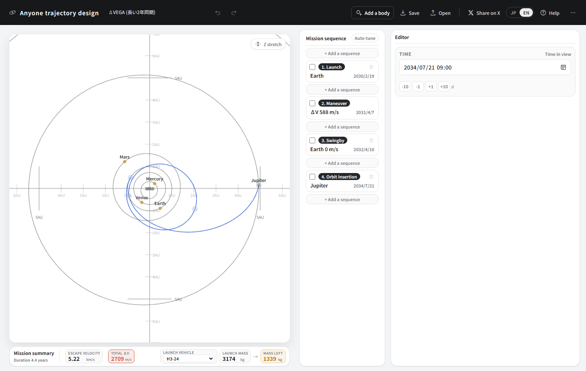
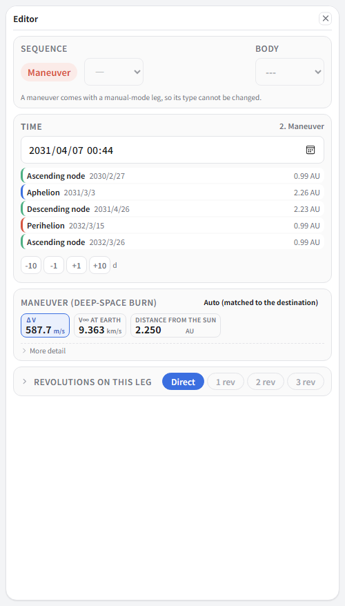
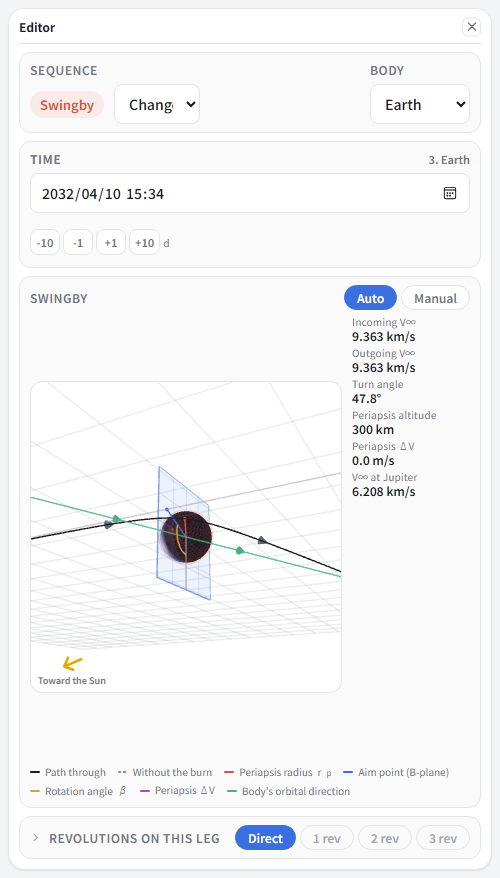
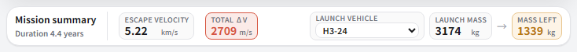
Nothing at all is burned at Earth. One 588 m/s burn turns a direct run carrying 14 kg into 1339 kg . It takes 4.4 years to reach Jupiter, but it carries more than 95 times as much.
Two-year resonance comes in a short and a long version
In the design above, launch to return took 781 days— about two months longer than two years. That is no accident. Vary the number of days to the return and look for “the smallest launch C3 that produces V∞ 9.13 km/s with a burn of 600 m/s or less”, and this is what you get.
Return in exactly two years and Earth is back where you launched, with the spacecraft coming in the same direction. No angle can be opened, so V∞ does not grow. What you can use are the two either side of it:the short one (678 days) and the long one (781 days) .
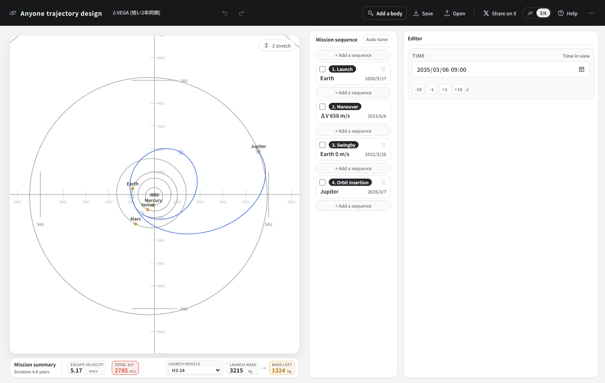
| Launch | The burn | The Earth swingby | Jupiter | Days back to Earth | C3 | Mass left | Time taken | |
|---|---|---|---|---|---|---|---|---|
| Short | 2030/5/17 | 658 m/s | 2032/3/25 | 2035/3/6 | 678 days | 26.68 | 1324 kg | 4.8 years |
| Long | 2030/2/19 | 588 m/s | 2032/4/10 | 2034/7/21 | 781 days | 27.21 | 1339 kg | 4.4 years |
The scores are almost identical. What differs is the shape and the time to Jupiter. Returning to Earth sooner, the short one has a longer leg out to Jupiter.
The good part: a window every year
ΔVEGA uses only Earth and Jupiter, so chances to launch come round at the same interval as the Earth → Jupiter window: every thirteen months. The table below tries the same recipe at each of them.
| Earth → Jupiter window | Launch | Days back to Earth | Launch C3 | The burn | V∞ on return |
|---|---|---|---|---|---|
| 2030/1/21 | 2028/3/7 | 685 days | 26.0 | 573 m/s | 9.06 km/s |
| 2031/2/25 | 2029/4/21 | 675 days | 27.0 | 593 m/s | 9.25 km/s |
| 2032/3/31 | 2030/5/26 | 675 days | 27.0 | 656 m/s | 9.61 km/s |
| 2033/5/30 | 2031/7/25 | 675 days | 27.0 | 694 m/s | 9.50 km/s |
| 2034/7/5 | 2032/8/24 | 680 days | 27.0 | 658 m/s | 9.57 km/s |
| 2035/8/10 | 2033/6/11 | 790 days | 29.2 | 634 m/s | 9.50 km/s |
Every window builds at a C3 of 30 or less. VEGA and VEEGA, later on, are also tied to where Venus is, so this is ΔVEGA's greatest strength.
VEGA: growing V∞ by calling at Venus
Instead of making V∞ with a burn, call at another body on the way— that is VEGA (Venus-Earth Gravity Assist). Earth → Venus → Earth, and then Earth throws you out to Jupiter. Its virtue is that the launch only needs enough energy to reach Venus, the easiest planet of them all.
Unlike ΔVEGA, this involves where Venus is as well as Earth and Jupiter, so trying to fix the arrival date at Jupiter all at once becomes hard very quickly. So we begin with “Final orbit”, the sequence that names no destination and only shows what orbit you ended up on after the swingby. First we build for whether the final orbit reaches Jupiter's orbit (5.2 AU), and leave hitting Jupiter itself until later.
Step 1: build Earth → Venus → Earth
- Place three sequences: make the second a swingby at Venus and the third a swingby at Earth.
- Set the launch and Venus dates from an Earth → Venus porkchop plot. The window comes round about every 1 year 7 months.
- Enter the date of the return from Venus to Earth. Around 300 days brings you back without fuss.
- Nudge the dates by a few days at a time to make the periapsis ΔV at Venus as small as possible. The closer to zero, the more of the bend you are getting without fuel.
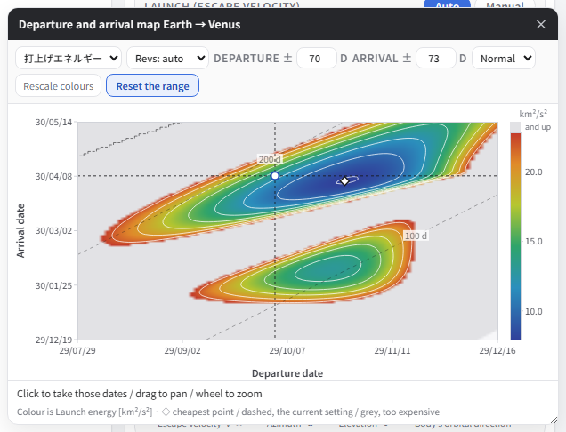
Here we used launch 2029/10/3, Venus 2030/4/8, Earth 2031/2/18. The launch escape velocity is only 3.59 km/s (C3 12.86), yet the V∞ at Venus is 5.426 km/s, and after 49.3° of bend at Venus the V∞ on returning to Earth is 9.592 km/s. One pass by Venus has nearly doubled V∞, and passed the 8.79 km/s that part 1 said was needed to be thrown out to Jupiter.
Step 2: add a final orbit and see how far it reaches
- Set the Earth swingby to manual mode— the mode where you decide the outcome yourself.
- Make the last sequence a Final orbit(the maneuver that came with manual mode disappears here).
- Vary the Earth swingby's periapsis altitude and rotation angle to find where the final orbit's aphelion is largest.
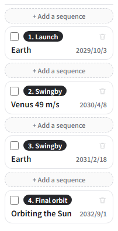
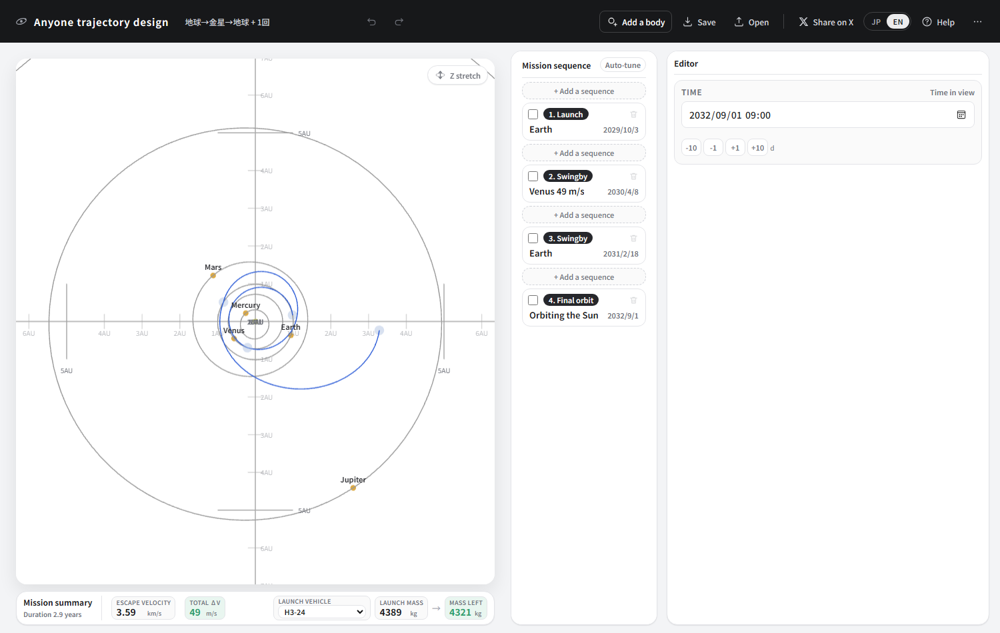
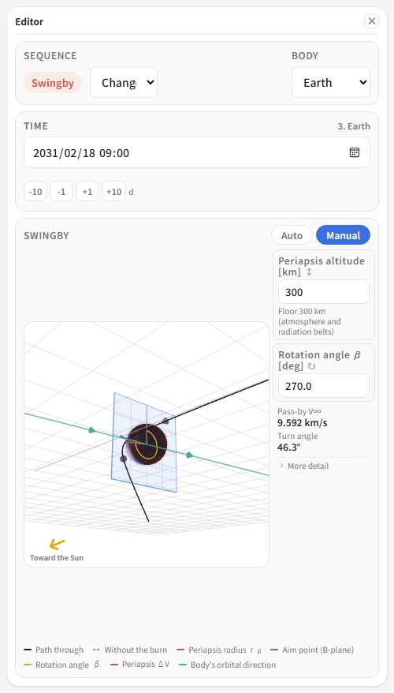
Why it does not reach
What is short is not V∞ but the turn angle. The direction of the V∞ coming into Earth is 95.7° away from Earth's orbital direction. Turn it all the way onto that direction and the speed would suffice, but even passing at the lowest allowed altitude (300 km) you can only bend 46.3° , leaving 49.4°. You are thrown out still pointing sideways, so the aphelion does not stretch.
What it costs to make up the difference with a burn
You can make up the shortfall with a maneuver — a deep-space burn. On the orbit after the swingby (perihelion 0.941 AU, aphelion 3.30 AU), burning 1656 m/s along the direction of travel at perihelion brings the aphelion to 5.2 AU. Burning at Earth's periapsis instead (a powered flyby) takes 2544 m/s. Burning at periapsis costs more because raising V∞ lowers how far you can bend (46.3° → 38.1°). Set against ΔVEGA's 588 m/s, both are expensive. As we shall see, put a two-year resonance in and meet Earth once more, and the burn is not needed at all.
Making it arrive at Jupiter
So far we have only asked whether it reaches Jupiter's orbit. To hit Jupiter itself, the day Jupiter arrives and the day you arrive must be made to agree. That means moving dates and trying; the trajectory below is what came of it. The Venus → Earth leg is set to one revolution, stretching the return V∞ to 12.9 km/s.
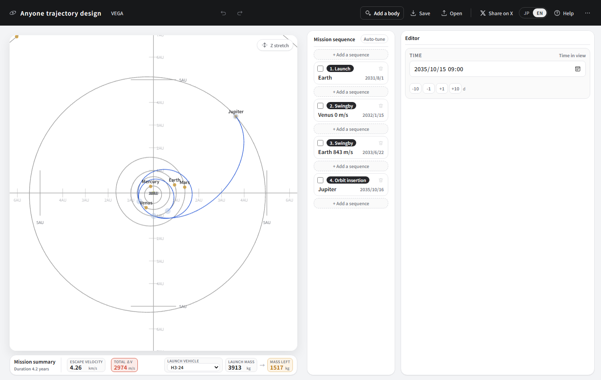
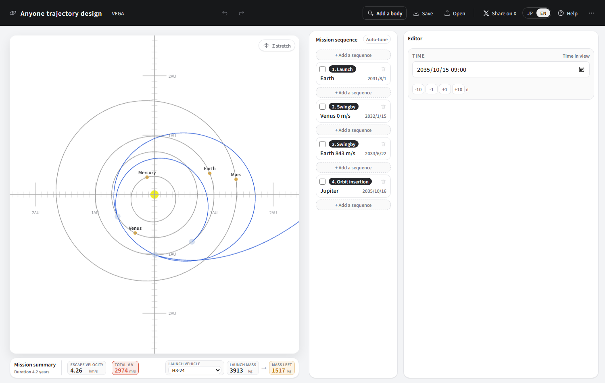
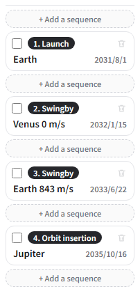
The launch escape velocity is only 4.26 km/s. The V∞ at Venus is 9.27 km/s, and after 35.7° of bend there, the V∞ on returning to Earth is 12.93 km/s. What ΔVEGA grew to 9.36 km/s with a burn, this has done without fuel.
| Leg | Days | Revolutions | Aphelion on this leg | V∞ on arrival | Turn angle there |
|---|---|---|---|---|---|
| Launch → Venus | 167 days | direct | 1.02 AU | 9.27 km/s | 35.7° |
| Venus → Earth | 524 days | 1 rev | 1.72 AU | 12.93 km/s | 31.1° |
| Earth → Jupiter | 845 days | direct | 4.99 AU | 6.28 km/s | - |
Venus orbits fast (35.1 km/s) and, as part 1 showed, makes an excellent swingby partner. The aphelion goes from 1.02 AU just after launch to 1.72 AU, and after Earth throws you out, to 4.99 AU.
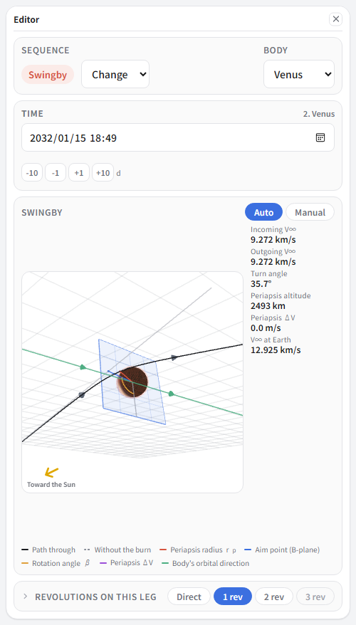
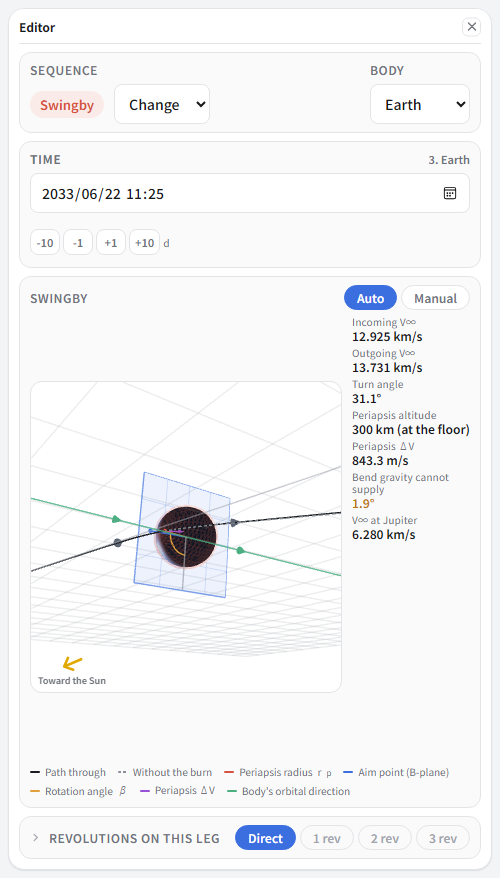
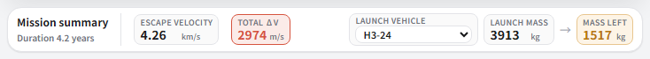
VEEGA: put a two-year resonance in and meet Earth again
If one bend is not enough, split it in two. Bend a little at the first Earth to get onto a two-year resonant orbit, meet Earth again two years later, and bend the rest there. That is VEEGA (Venus-Earth-Earth Gravity Assist). It is also the sequence the Galileo spacecraft used to reach Jupiter.
Step 3: onto a two-year resonance, then a second swingby
Add one more Earth behind the Earth → Venus → Earth built in step 1.
- Put the Earth swingby you altered in step 5 back into auto mode.
- Behind it add a second swingby at Earth, with its date 800–850 days later. Exactly one year or exactly two will not solve: departure and arrival become the same point.
- Set that leg's revolutions to 1(go one extra time round the Sun before meeting Earth).
- Set the second Earth swingby to manual mode, and make the last sequence Final orbit.
- Again vary periapsis altitude and rotation angle to maximise the aphelion.
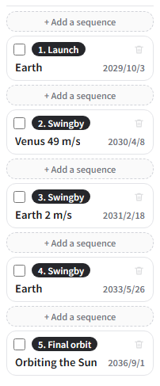
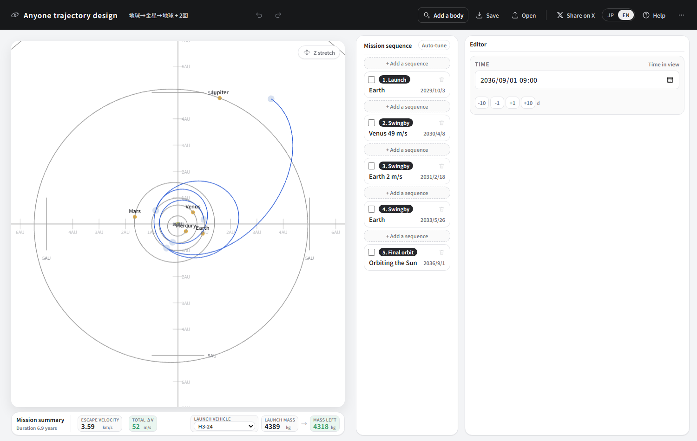
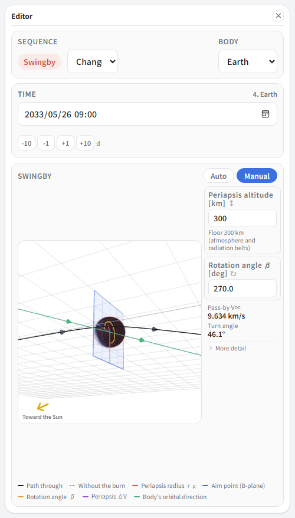
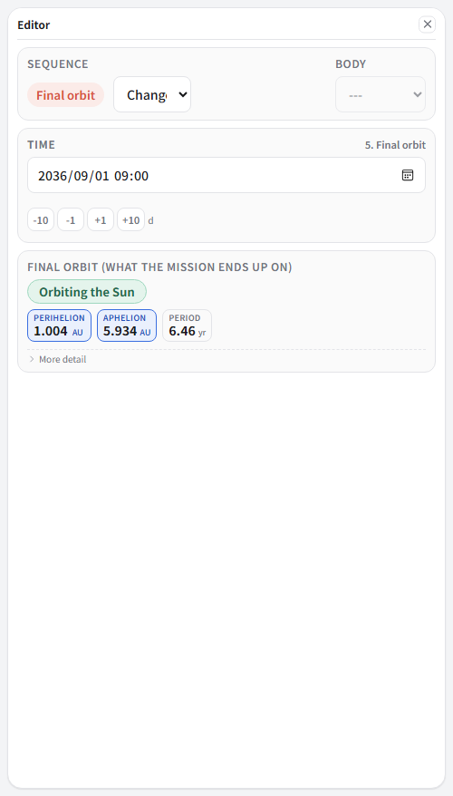
31.1° at the first Earth to get onto the resonance, 46.1° at the second: 77.2° in all. What could only be bent 46.3° in one go bends 77.2° in two. V∞ hardly moves, 9.592 → 9.634 km/s (a leg returning to the same body does not raise V∞). What grew is the total angle you can bend, and that alone takes the aphelion from 3.30 to 5.934 AU.
Making it arrive at Jupiter
All that is left is to line it up with the day Jupiter arrives — or so one would like to say, but this too is trial and error. Moving dates and adding a Jupiter sequence, we looked for where the periapsis ΔV goes to zero. This is what turned up.
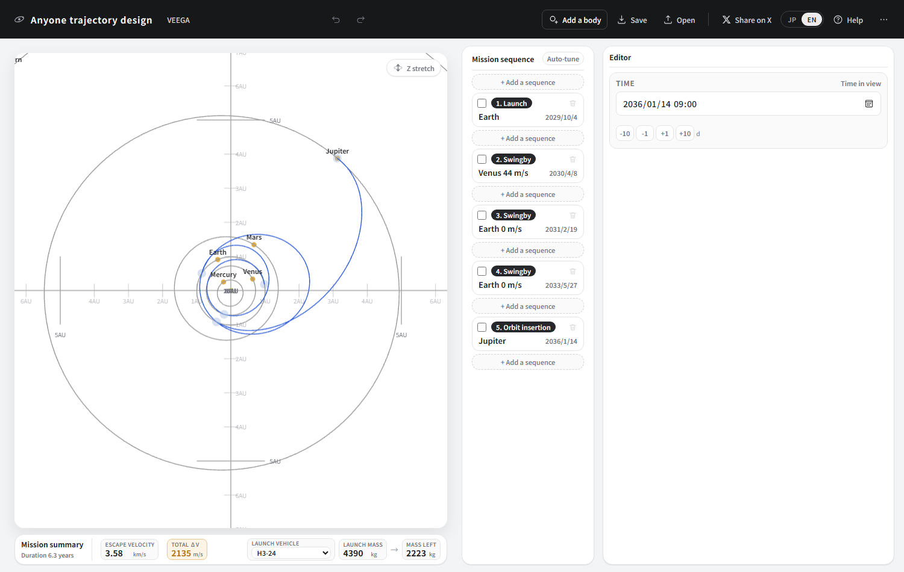
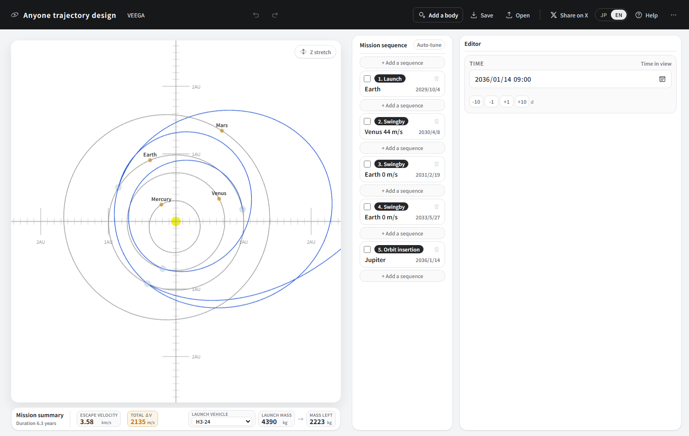
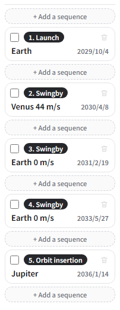
| Leg | Days | Revolutions | Aphelion on this leg | V∞ on arrival | Turn angle there |
|---|---|---|---|---|---|
| Launch → Venus | 187 days | direct | 1.01 AU | 5.45 km/s | 49.3° |
| Venus → Earth | 316 days | direct | 1.36 AU | 9.60 km/s | 31.0° |
| Earth → Earth | 828 days | 1 rev | 2.34 AU | 9.64 km/s | 42.8° |
| Earth → Jupiter | 963 days | direct | 5.00 AU | 5.96 km/s | - |
31.0° at the first Earth and 42.8° at the second: 73.8° in all. Set against VEGA, which fell 1.9° short trying to do it in one, splitting it leaves room to spare. V∞ is 9.60 km/s, smaller than VEGA's, which is exactly why each bend can be larger. The aphelion climbs in steps: 1.01 → 1.36 → 2.34 → 5.00 AU.
The Earth → Earth leg in the middle takes 828 days. Its orbit has a semi-major axis of 1.62 AU and a period of 754 days — very nearly the same shape as the two-year resonance used for ΔVEGA (period 757 days). The difference is that instead of squaring the dates with a burn, it sets the leg's revolutions to 1 and goes one extra time round the Sun before meeting Earth. Earth meanwhile goes round 2.27 times, and they meet after 828 days. No burn is needed.
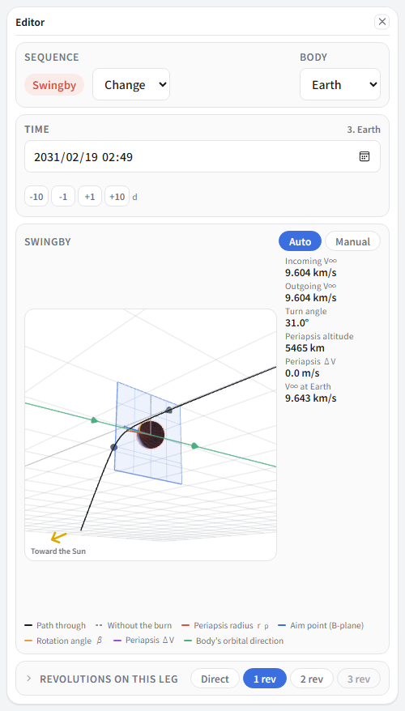
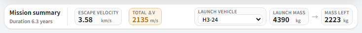
Getting a feel for hitting Jupiter
To be honest, we could not find a recipe that always produces one right through to arriving at Jupiter. There are five dates, and all of them must mesh. The arriving versions on this page came from fixing conditions and sweeping exhaustively. Even so, we did learn how to feel our way toward one, so here it is.
- Watch the V∞ on return. Selecting a sequence shows “Next V∞ at …”. At 9–10 km/s, the second Earth can throw you out to Jupiter.
- Setting Venus → Earth to one revolution stretches V∞ nicely. It reached 12.9 km/s for the VEGA on this page. Stretch it too far, though, and it cannot be bent.
- Earth → Earth: 800–850 days with one revolution. That is the two-year resonance.
- Finally add the Jupiter sequence and look for Auto-tune. If periapsis ΔV is left over at Earth or Venus, nudge the dates a few days at a time.
The four side by side
| Trajectory | Launch C3 | Launchable mass | Burn on the way | Burn to enter orbit at Jupiter | Mass left | Time taken |
|---|---|---|---|---|---|---|
| Direct to Jupiter | 83.32 | 29 kg | - | 2252 m/s | 14 kg | 2.0 years |
| ΔVEGA (long resonance) | 27.21 | 3174 kg | 588 m/s burn at aphelion | 2121 m/s | 1339 kg | 4.4 years |
| VEGA | 18.16 | 3913 kg | 843 m/s periapsis ΔV at Earth | 2130 m/s | 1517 kg | 4.2 years |
| VEEGA | 12.85 | 4390 kg | 44 m/s periapsis ΔV at Venus | 2091 m/s | 2223 kg | 6.3 years |
The further down, the easier the launch, the more you can carry, and the longer it takes. Between the direct run's 14 kg and VEEGA's 2223 kg lies a factor of more than 158. Each swingby added brings the C3 down another step.
In short
- For Earth to throw you out to Jupiter takes V∞ of 8.79 km/s or more. Flying straightforwardly does not get there.
- ΔVEGA: build an orbit that returns to Earth in two years and burn about 600 m/s at aphelion to open an angle. The speed barely changes, yet V∞ nearly doubles. The window comes round every thirteen months.
- A two-year resonance cannot be used at exactly two years. There is a short one (678 days) and a long one (781 days).
- VEGA: calling at Venus alone nearly doubles V∞. But the direction coming into Earth is far off the orbital direction, and one bend cannot fix it. The final orbit's aphelion stops at 3.298 AU, short of Jupiter's orbit.
- VEEGA: split the bend in two across a resonance and the aphelion reaches 5.934 AU with no burn at all, past Jupiter's orbit. The lightest launch of them all, and the longest.
Hohmann transfers and the third dimension — why a porkchop plot has two islands.
What rockets can launch — how C3 relates to launchable mass.
Tutorial ④ — build a Juno-like ΔVEGA with your own hands.